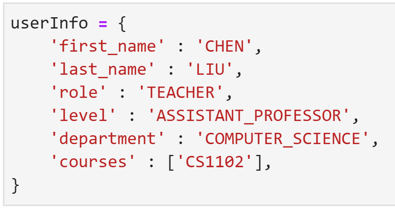

Introduction to Python
Learn more about the python programming Lanuage
Python Dictionaries
Python provides a data structure called dictionaries that enables users to store and retrieve information using a key-value pair system. Each key in a dictionary maps to a specific value, which can be any data type supported by Python. Dictionaries are similar to sets in that their keys are unique and non-repeatable.
Below is an example of defining a dictionary:

Unlike lists, where elements can be accessed using index values, dictionaries require the use of key values to retrieve information. This means that in order to get a specific value from a dictionary, the user needs to know the corresponding key that is associated with that value. This makes dictionaries an efficient way of organizing and accessing non-linear information.
A key feature of dictionaries is that dictionary values are mutable, which means that their contents can be modified. Users can add or remove keys and values, as well as change the values associated with existing keys. This flexibility allows users to work with dynamic data sets and modify them as needed.
Python dictionaries have a wide range of applications and can be used in various contexts. They are particularly useful in data science, where large amounts of data can be easily stored in a dictionary and retrieved quickly using the associated keys. As a result, dictionaries are an essential tool for data scientists who work with complex data sets and require a flexible way of organizing and accessing information.